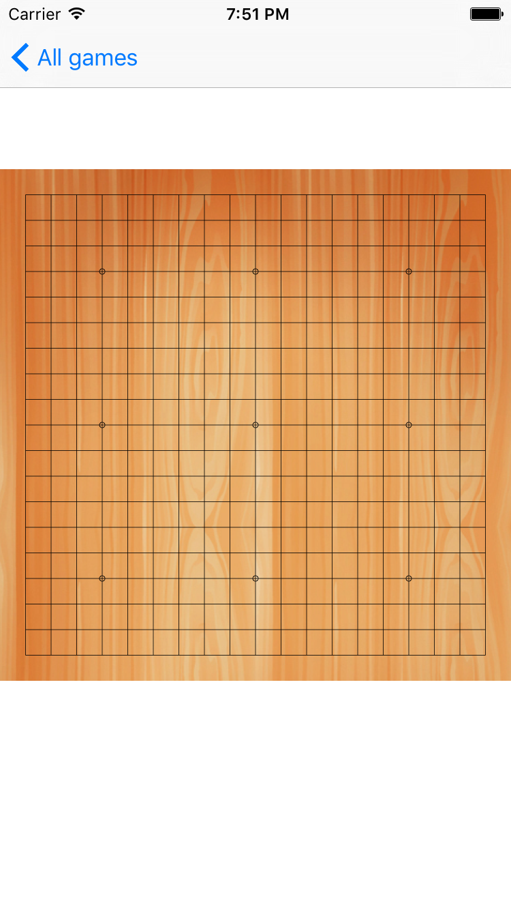

用Swift写围棋App－04棋盘
tags: 应用, 开发随笔
到现在为止，虽然很顺利，但这个应用只是一个普通的应用，和围棋一点关系都没有 :)
但是，这些工作是必须的。所谓万事开头难，没有搞定琐碎的事情打基础，伟大的想法无法实现。
接下来，我们将实现和围棋相关的逻辑。
第一件事是棋盘。
围棋盘由19条横线19条竖线组成，共361个交叉点，最外边的线称为边线。为了便于识别棋子的位置，棋盘上划了九个点，术语称做“星”，中央的星点又称为“天元”。棋盘可分为“角”、“边”以及“中腹”。正式比赛所用棋盘为19×19。
我们需要创建一个新的 UI组件，将它命名为GobanView，它继承自UIView。要绘制棋盘，我们基本上只需要覆盖drawRect方法。
在这里，我们主要要做以下几件事:
- 绘制背景图。我们要找一个木纹的高逼格的看起来有感觉的背景；
- 绘制19*19的线条；
- 绘制天元和星等9个点；
逻辑很直接，实现也很简单。代码如下：
class GobanView: UIView {
override func drawRect(rect: CGRect) {
let ctx = UIGraphicsGetCurrentContext()
let rec = CGContextGetClipBoundingBox(ctx)
let w = rec.size.width;
//back ground image
let background = UIImage(named:"board_back")
CGContextDrawImage(ctx, rec, background!.CGImage )
//draw lines
CGContextSetRGBStrokeColor(ctx, 0, 0, 0, 1)
CGContextSetLineWidth(ctx, 0.4)
CGContextBeginPath(ctx)
let space = w/20.0
for(var i=0;i<=18;i++)
{
CGContextMoveToPoint(ctx, (CGFloat(i+1))*space, space)
CGContextAddLineToPoint(ctx, (CGFloat(i+1))*space, w-space)
CGContextStrokePath(ctx)
}
for(var i=0;i<=18;i++)
{
CGContextMoveToPoint(ctx, space,(CGFloat(i+1))*space);
CGContextAddLineToPoint(ctx,w-space, (CGFloat(i+1))*space);
CGContextStrokePath(ctx);
}
//draw labels
// nine dots
for (var i=0;i<=2;i++)
{
for(var j=0;j<=2;j++)
{
CGContextBeginPath(ctx);
CGContextAddArc(ctx, (CGFloat(1+3+6*i))*space ,CGFloat(1+3+6*j)*space, 2, 0, CGFloat(2.0*M_PI), 1);
CGContextStrokePath(ctx);
}
}
}
}
然后打开main.stroyboard，在GameViewController上放一个UIView，将它的类型指定为我们定义的GobanView。运行一下程序，效果如下：

看起来很好，将代码push到 github上
https://github.com/marknote/GoTao